The Dynamic Decay Adjustment (DDA--)Algorithm is an extension of the
RCE-Algorithm (see [Hud92,RCE82]) and offers easy and
constructive training for Radial Basis Function Networks. RBFs
trained with the DDA-Algorithm often achieve classification accuracy
comparable to Multi Layer Perceptrons (MLPs) but training is significantly faster ([BD95]).
but training is significantly faster ([BD95]).
An RBF trained with the DDA-Algorithm (RBF-DDA) is similar in structure to the common feedforward MLP with one hidden layer and without shortcut connections:
The main differences to an MLP are the activation function and propagation rule of the hidden layer: Instead of using a sigmoid or another nonlinear squashing function, RBFs use localized functions, radial Gaussians, as an activation function. In addition, a computation of the Euclidian distance to an individual reference vector replaces the scalar product used in MLPs:
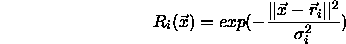
If the network receives vector
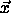
as an input,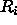
indicates the activation of one RBF unit with reference vector and standard deviation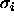
.The output layer computes the output for each class as follows:
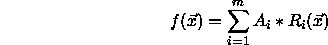
with m indicating the number of RBFs belonging to the corresponding class and
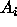
being the weight for each RBF.
An example of a full RBF-DDA is shown in figure  .
Note that there do not exist any shortcut connections between input
and output units in an RBF-DDA.
.
Note that there do not exist any shortcut connections between input
and output units in an RBF-DDA.
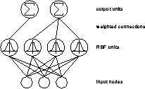
In this illustration the weight vector that connects all input units to one hidden unit represents the centre of the Gaussian. The Euclidian distance of the input vector to this reference vector (or prototype) is used as an input to the Gaussian which leads to a local response; if the input vector is close to the prototype, the unit will have a high activation. In contrast the activation will be close to zero for larger distances. Each output unit simply computes a weighted sum of all activations of the RBF units belonging to the corresponding class.
The DDA-Algorithm introduces the idea of distinguishing between
matching and conflicting neighbors in an area of
conflict. Two thresholds  and
and  are
introduced as illustrated in figure
are
introduced as illustrated in figure  .
.
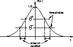
Normally,  is set to be greater than
is set to be greater than  which
leads to a area of conflict where neither matching nor
conflicting training patterns are allowed to lie
which
leads to a area of conflict where neither matching nor
conflicting training patterns are allowed to lie . Using these
thresholds, the algorithm constructs the network dynamically and
adjusts the radii individually.
. Using these
thresholds, the algorithm constructs the network dynamically and
adjusts the radii individually.
In short the main properties of the DDA-Algorithm are:
 and
and  have to
be adjusted manually. Fortunately the values of these two
thresholds are not critical to determine. For all tasks that have
been used so far,
have to
be adjusted manually. Fortunately the values of these two
thresholds are not critical to determine. For all tasks that have
been used so far,  and
and  was
a good choice.
was
a good choice.
 ) and correct classifications are above
another threshold (
) and correct classifications are above
another threshold (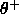
).The DDA-Algorithm is based on two steps. During training, whenever a pattern is misclassified, either a new RBF unit with an initial weight = 1 is introduced (called commit) or the weight of an existing RBF (which covers the new pattern) is incremented. In both cases the radii of conflicting RBFs (RBFs belonging to the wrong class) are reduced (called shrink). This guarantees that each of the patterns in the training data is covered by an RBF of the correct class and none of the RBFs of a conflicting class has an inappropriate response.
Two parameters are introduced at this stage, a positive threshold
 and a negative threshold
and a negative threshold  . To commit
a new prototype, none of the existing RBFs of the correct class has
an activation above
. To commit
a new prototype, none of the existing RBFs of the correct class has
an activation above  and during shrinking no RBF of
a conflicting class is allowed to have an activation above
and during shrinking no RBF of
a conflicting class is allowed to have an activation above  .
Figure
.
Figure  shows an example that illustrates the first
few training steps of the DDA-Algorithm.
shows an example that illustrates the first
few training steps of the DDA-Algorithm.
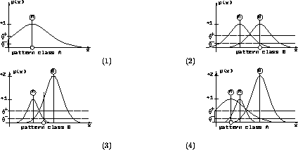
After training is finished, two conditions are true for all input--output
pairs
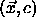
of the training data: :
:
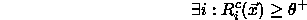
 (
(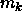
indicates the number of prototypes belonging to class k):
For all experiments conducted so far, the choice of  =0.4
and
=0.4
and
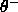
=0.2 led to satisfactory results. In theory, those parameters should be dependent on the dimensionality of the feature space but in practice the values of the two thresholds seem to be uncritical. Much more important is that the input data is normalized. Due to the radial nature of RBFs each attribute should be distributed over an equivalent range. Usually normalization into [0,1] is sufficient.